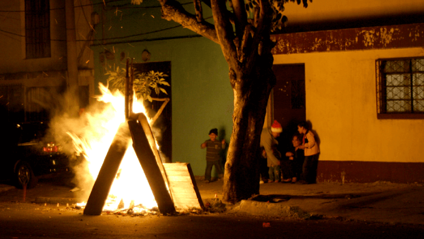
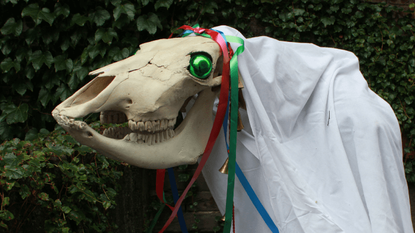
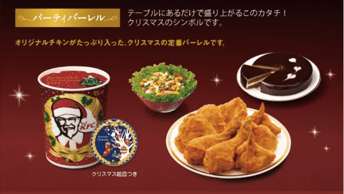

Guatemalans get fired up for Christmas. Literally. December 6 marks La Quema del Diablo (“the Burning of the Devil”), which is when families in Guatemala set bonfires outside of their homes and burn effigies of Satan to expunge evil spirits, celebrating the victory of good over evil. In the past, people would bring out all the trash from their houses and set it alight, and some still do. In the wake of environmental backlash, however, many people stick to burning piñatas shaped like the Devil. This celebration is accompanied by traditional donuts and warm fruit punch, and it signifies the start of the Christmas season.
You’re probably familiar with Christmas caroling, but you’re definitely not familiar with the carolers who might show up at your door in Wales. At some point in December or January, you could open your door to find someone hidden by a ribbon and bell-adorned sheet, holding up a real horse skull on a stick, with a few fellow revelers in tow. As part of this Mari Lwyd (“Gray Mare”) tradition, the group will sing to you and then challenge you to a battle of rhyming insults in Welsh (called a pwnco). After the contest, the party is usually invited inside for refreshments.
In the United States, we associate Christmas with ham or figgy pudding, but in Japan, it’s all about Kentucky Fried Chicken. An estimated 3.5 million Japanese families eat fried chicken on Christmas Eve thanks to a marketing stunt by KFC in the 1970s called Kurisumasu ni wa Kentakkii (“Kentucky for Christmas”). Christians make up a very small percentage of the Japanese population, so this campaign made up for a lack of Christmas holiday traditions. The KFC Christmas Meal is so popular, many customers pre-order their dinners — which include fried chicken, cake and champagne — months in advance.
